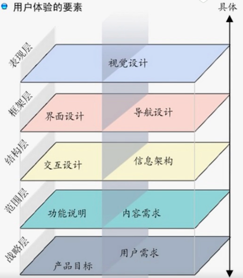

<!DOCTYPE html>
<html>
<head><meta name="generator" content="Hexo 3.8.0">
  <meta charset="utf-8">
  
  <title>竞品分析 | guowj</title>
  <meta name="viewport" content="width=device-width, initial-scale=1, maximum-scale=1">
  
  <meta name="keywords" content="产品竞品分析">
  
  
  
  
  <meta name="description" content="&amp;nbsp;&amp;nbsp;&amp;nbsp;&amp;nbsp;&amp;nbsp;&amp;nbsp;竞品分析是对所研发同类型的产品进行分析讨论，并给出类比归纳的分析结果，用以了解现有产品的相关信息以及它与竞争对手之间的差异，从而借鉴于产品研发中。最竞品分析我认为最重要的两点是：1.知己知彼，百战不殆。2.从竞争对手那里学到好的东西，比如手段和策略，并把这些好的东西转化为自己的优势。接下来，为了给自己加深记忆，我将记录下如何">
<meta name="keywords" content="产品,竞品分析">
<meta property="og:type" content="article">
<meta property="og:title" content="竞品分析">
<meta property="og:url" content="https://gwjacqueline.github.io/竞品分析/index.html">
<meta property="og:site_name" content="guowj">
<meta property="og:description" content="&amp;nbsp;&amp;nbsp;&amp;nbsp;&amp;nbsp;&amp;nbsp;&amp;nbsp;竞品分析是对所研发同类型的产品进行分析讨论，并给出类比归纳的分析结果，用以了解现有产品的相关信息以及它与竞争对手之间的差异，从而借鉴于产品研发中。最竞品分析我认为最重要的两点是：1.知己知彼，百战不殆。2.从竞争对手那里学到好的东西，比如手段和策略，并把这些好的东西转化为自己的优势。接下来，为了给自己加深记忆，我将记录下如何">
<meta property="og:locale" content="zh-CN">
<meta property="og:image" content="https://gwjacqueline.github.io/images/pm/jhsj.png">
<meta property="og:updated_time" content="2019-06-23T12:28:48.000Z">
<meta name="twitter:card" content="summary">
<meta name="twitter:title" content="竞品分析">
<meta name="twitter:description" content="&amp;nbsp;&amp;nbsp;&amp;nbsp;&amp;nbsp;&amp;nbsp;&amp;nbsp;竞品分析是对所研发同类型的产品进行分析讨论，并给出类比归纳的分析结果，用以了解现有产品的相关信息以及它与竞争对手之间的差异，从而借鉴于产品研发中。最竞品分析我认为最重要的两点是：1.知己知彼，百战不殆。2.从竞争对手那里学到好的东西，比如手段和策略，并把这些好的东西转化为自己的优势。接下来，为了给自己加深记忆，我将记录下如何">
<meta name="twitter:image" content="https://gwjacqueline.github.io/images/pm/jhsj.png">
  
    <link rel="alternate" href="/atom.xml" title="guowj" type="application/atom+xml">
  

  

  <link rel="icon" href="/css/images/mylogo.png">
  <link rel="apple-touch-icon" href="/css/images/mylogo.png">
  
    <link href="//fonts.googleapis.com/css?family=Source+Code+Pro" rel="stylesheet" type="text/css">
  
  <link href="https://fonts.googleapis.com/css?family=Open+Sans|Montserrat:700" rel="stylesheet" type="text/css">
  <link href="https://fonts.googleapis.com/css?family=Roboto:400,300,300italic,400italic" rel="stylesheet" type="text/css">
  <link href="//netdna.bootstrapcdn.com/font-awesome/4.0.3/css/font-awesome.css" rel="stylesheet">
  <style type="text/css">
    @font-face{font-family:futura-pt; src:url("../css/fonts/FuturaPTBold.otf") format("woff");font-weight:500;font-style:normal;}
    @font-face{font-family:futura-pt-light; src:url("../css/fonts/FuturaPTBook.otf") format("woff");font-weight:lighter;font-style:normal;}
    @font-face{font-family:futura-pt-italic; src:url("../css/fonts/FuturaPTBookOblique.otf") format("woff");font-weight:400;font-style:italic;}
}

  </style>
  <link rel="stylesheet" href="/css/style.css">

  <script src="/js/jquery-3.1.1.min.js"></script>
  <script src="/js/bootstrap.js"></script>

  <!-- Bootstrap core CSS -->
  <link rel="stylesheet" href="/css/bootstrap.css">

  
    <link rel="stylesheet" href="/css/dialog.css">
  

  

  
    <link rel="stylesheet" href="/css/header-post.css">
  

  
  
  
    <link rel="stylesheet" href="/css/vdonate.css">
  

</head>
</html>


  <body data-spy="scroll" data-target="#toc" data-offset="50">


  
  <div id="container">
    <div id="wrap">
      
        <header>

    <div id="allheader" class="navbar navbar-default navbar-static-top" role="navigation">
        <div class="navbar-inner">
          
          <div class="container"> 
            <button type="button" class="navbar-toggle" data-toggle="collapse" data-target=".navbar-collapse">
              <span class="sr-only">Toggle navigation</span>
              <span class="icon-bar"></span>
              <span class="icon-bar"></span>
              <span class="icon-bar"></span>
            </button>

            
              <a class="brand" style="
                 margin-top: 0px;" href="#" data-toggle="modal" data-target="#myModal">
                  
              </a>
            
            
            <div class="navbar-collapse collapse">
              <ul class="hnav navbar-nav">
                
                  <li> <a class="main-nav-link" href="/">首页</a> </li>
                
                  <li> <a class="main-nav-link" href="/archives">归档</a> </li>
                
                  <li> <a class="main-nav-link" href="/categories">分类</a> </li>
                
                  <li> <a class="main-nav-link" href="/tags">标签</a> </li>
                
                  <li><div id="search-form-wrap">

    <form class="search-form">
        <input type="text" class="ins-search-input search-form-input" placeholder>
        <button type="submit" class="search-form-submit"></button>
    </form>
    <div class="ins-search">
    <div class="ins-search-mask"></div>
    <div class="ins-search-container">
        <div class="ins-input-wrapper">
            <input type="text" class="ins-search-input" placeholder="请输入关键词...">
            <span class="ins-close ins-selectable"><i class="fa fa-times-circle"></i></span>
        </div>
        <div class="ins-section-wrapper">
            <div class="ins-section-container"></div>
        </div>
    </div>
</div>
<script>
(function (window) {
    var INSIGHT_CONFIG = {
        TRANSLATION: {
            POSTS: '文章',
            PAGES: '页面',
            CATEGORIES: '分类',
            TAGS: '标签',
            UNTITLED: '(无标题)',
        },
        ROOT_URL: '/',
        CONTENT_URL: '/content.json',
    };
    window.INSIGHT_CONFIG = INSIGHT_CONFIG;
})(window);
</script>
<script src="/js/insight.js"></script>

</div></li>
            </ul></div>
          </div>
                
      </div>
    </div>

</header>


      
            
      <div id="content" class="outer">
        
          <section id="main" style="float:none;"><article id="post-竞品分析" style="width: 75%; float:left;" class="article article-type-post" itemscope itemprop="blogPost">
  <div id="articleInner" class="article-inner">
    
    
      <header class="article-header">
        
  
    <h1 class="thumb" itemprop="name">
      竞品分析
    </h1>
  

      </header>
    
    <div class="article-meta">
      
	<a href="/竞品分析/" class="article-date">
	  <time datetime="2019-06-23T02:34:59.000Z" itemprop="datePublished">2019-06-23</time>
	</a>

      
    <a class="article-category-link" href="/categories/产品/">产品</a>

      
	<a class="article-views">
	<span id="busuanzi_container_page_pv">
		阅读量<span id="busuanzi_value_page_pv"></span>
	</span>
	</a>

      

    </div>
    <div class="article-entry" itemprop="articleBody">
      
        <blockquote>
<p>&nbsp;&nbsp;&nbsp;&nbsp;&nbsp;&nbsp;竞品分析是对所研发同类型的产品进行分析讨论，并给出类比归纳的分析结果，用以了解现有产品的相关信息以及它与竞争对手之间的差异，从而借鉴于产品研发中。最竞品分析我认为最重要的两点是：1.知己知彼，百战不殆。2.从竞争对手那里学到好的东西，比如手段和策略，并把这些好的东西转化为自己的优势。接下来，为了给自己加深记忆，我将记录下如何做一个竞品分析。</p>
</blockquote>
<a id="more"></a>
<h2 id="竞品分析步骤"><a href="#竞品分析步骤" class="headerlink" title="竞品分析步骤"></a>竞品分析步骤</h2><h3 id="了解自己"><a href="#了解自己" class="headerlink" title="了解自己"></a>了解自己</h3><p>&nbsp;&nbsp;&nbsp;&nbsp;&nbsp;&nbsp;首先，我们应该对自己所做的产品有详细的了解。我们需要分析自己产品业务类型的市场行情、明确产品定位和用户需求。对自己有认识后才能找到相近的竞品，调研的准确性会大大提升。</p>
<h4 id="分析自己产品业务类型的市场行情"><a href="#分析自己产品业务类型的市场行情" class="headerlink" title="分析自己产品业务类型的市场行情"></a>分析自己产品业务类型的市场行情</h4><p>&nbsp;&nbsp;&nbsp;&nbsp;&nbsp;&nbsp;我们需要了解自己产品业务在当前市场上是怎么样的，是处于红海市场的风口浪尖？亦或是在蓝海市场中夹缝求生？明确自己的业务市场，会对我们后续的判断及决策起很大的作用。比如一些风口行业的产品行事会大胆求突破，而稳健型产品则会对用户体验的细节追求完美。</p>
<h4 id="明确产品定位与用户需求"><a href="#明确产品定位与用户需求" class="headerlink" title="明确产品定位与用户需求"></a>明确产品定位与用户需求</h4><p>&nbsp;&nbsp;&nbsp;&nbsp;&nbsp;&nbsp;首先我们要知道我们的产品是干什么的、对应的目标人群是什么、他们需要用我们产品的哪些功能以及我们的产品解决了哪些客户的痛点。</p>
<h3 id="选择竞品"><a href="#选择竞品" class="headerlink" title="选择竞品"></a>选择竞品</h3><h4 id="选择渠道"><a href="#选择渠道" class="headerlink" title="选择渠道"></a>选择渠道</h4><p>1.搜索：百度、知乎、易观智库、微博，各大 PM 社区等。如果有 APP，上苹果和各大安卓的应用商店搜索关键词。</p>
<p>2.善问：问朋友，问同事，问领域的专业人士找出合适的竞品</p>
<h4 id="竞品分类"><a href="#竞品分类" class="headerlink" title="竞品分类"></a>竞品分类</h4><p>&nbsp;&nbsp;&nbsp;&nbsp;&nbsp;&nbsp;竞品应分为三类：直接竞品、潜在竞品和转移性竞品。</p>
<h5 id="直接竞品"><a href="#直接竞品" class="headerlink" title="直接竞品"></a>直接竞品</h5><p>&nbsp;&nbsp;&nbsp;&nbsp;&nbsp;&nbsp;这一类竞品就是与我们产品目标用户相同，内容相似构成直接竞品的产品。比如招商银行 APP 和平安银行 APP。</p>
<h5 id="潜在竞品"><a href="#潜在竞品" class="headerlink" title="潜在竞品"></a>潜在竞品</h5><p>&nbsp;&nbsp;&nbsp;&nbsp;&nbsp;&nbsp;与我们产品目标用户相似，暂时没有我们产品的功能模块，但是通过后期升级，可以加上此类模块的产品。比如微信是做熟人社交的，默默是做陌生人社交的，虽然产品目标不同，但是后期微信加了摇一摇功能，就是潜在竞品像直接竞品的一个转化</p>
<h5 id="转移性竞品"><a href="#转移性竞品" class="headerlink" title="转移性竞品"></a>转移性竞品</h5><p>&nbsp;&nbsp;&nbsp;&nbsp;&nbsp;&nbsp;目标人群有一定共性，但产品目标不同，但在特定场景下对用户使用时间形成竞争的产品。比如我们做的是运动 app,但是想边运动边听歌，那么有关听歌的产品就会成为我们的转移性竞品。可以再产品后续扩展功能点的时候进行。</p>
<h3 id="竞品分析"><a href="#竞品分析" class="headerlink" title="竞品分析"></a>竞品分析</h3><h4 id="背景分析"><a href="#背景分析" class="headerlink" title="背景分析"></a>背景分析</h4><ul>
<li>基本信息：包含时间，手机环境，APP 名称，版本号信息</li>
<li>产品的概括或简介说明(比如唯品会：是一家专门做特卖的网站)</li>
<li>产品定位</li>
<li>用户需求分析</li>
<li>市场状况现状分析</li>
<li>运营方法与重大事记</li>
</ul>
<h4 id="竞品分析与产品分析流程"><a href="#竞品分析与产品分析流程" class="headerlink" title="竞品分析与产品分析流程"></a>竞品分析与产品分析流程</h4><p>&nbsp;&nbsp;&nbsp;&nbsp;&nbsp;&nbsp;从体验者来说，是从具体往抽象去分析的。但是做产品的时候，是从抽象到具象的。</p>
<div align="center"><br>  <br></div>

<h5 id="表现层-————-你看到的是什么"><a href="#表现层-————-你看到的是什么" class="headerlink" title="表现层 ———— 你看到的是什么"></a>表现层 ———— 你看到的是什么</h5><p>&nbsp;&nbsp;&nbsp;&nbsp;&nbsp;&nbsp;表现层是 UI 界面，视觉直观可见。就比如我们在玩微信的时候，一开始看的肯定就是视觉层，好不好看。</p>
<h5 id="框架层-————-这些区域和位置如何来决定表现层"><a href="#框架层-————-这些区域和位置如何来决定表现层" class="headerlink" title="框架层 ———— 这些区域和位置如何来决定表现层"></a>框架层 ———— 这些区域和位置如何来决定表现层</h5><p>&nbsp;&nbsp;&nbsp;&nbsp;&nbsp;&nbsp;框架层一般分为深度优先和广度优先。深度优先常用在移动端，比如天猫下面有男装，女装，童装等。广度优先常用在网页，因为屏幕足够大，所以一层就能说完。</p>
<h5 id="结构层-————-每种列别应该出现在哪里"><a href="#结构层-————-每种列别应该出现在哪里" class="headerlink" title="结构层 ———— 每种列别应该出现在哪里"></a>结构层 ———— 每种列别应该出现在哪里</h5><p>&nbsp;&nbsp;&nbsp;&nbsp;&nbsp;&nbsp;结构层指的是产品的结构，是你对着产品，从产品功能上看，就能用脑图把主干分支梳理出脉络。</p>
<h5 id="范围层-————-按照功能与特性，表现的是否合适，如何决定结构层"><a href="#范围层-————-按照功能与特性，表现的是否合适，如何决定结构层" class="headerlink" title="范围层 ———— 按照功能与特性，表现的是否合适，如何决定结构层"></a>范围层 ———— 按照功能与特性，表现的是否合适，如何决定结构层</h5><p>&nbsp;&nbsp;&nbsp;&nbsp;&nbsp;&nbsp;范围层指这个产品的思路是从满足用户需求的角度理解的，满足了哪些需求，通过什么样的产品设计、策略、流程满足的，简单来说就是功能。</p>
<h5 id="战略层-————-需要什么样的功能与特性"><a href="#战略层-————-需要什么样的功能与特性" class="headerlink" title="战略层 ———— 需要什么样的功能与特性"></a>战略层 ———— 需要什么样的功能与特性</h5><p>&nbsp;&nbsp;&nbsp;&nbsp;&nbsp;&nbsp;最后就是战略层，比如目标用户是什么，产品定位是什么。战略层是产品最深层的思考，产品的市场容量、目标用户、解决的核心需求、产品定位、商业化、产品循环等。</p>
<p><strong>注意：这里不要把结构层和范围层混淆了，要注意结构层就是层级信息脉络，而范围层就是功能</strong></p>
<h3 id="竞品分析结论"><a href="#竞品分析结论" class="headerlink" title="竞品分析结论"></a>竞品分析结论</h3><ul>
<li>制作简单的分析报告，说出自己的产品与横向竞品有哪些区别，比如为什么人家有的我也有，为什么人家有的我没有，为什么人家没有的我要有</li>
<li>我有哪些人家没有的附加功能，这些功能为哪些用户群体服务，为什么用户会选择我们，概况如下：<br> 1.产品的概况或简介说明<br> 2.产品的核心功能总结<br> 3.产品的主要功能简介<br> 4.产品的功能与界面优缺点<br></li>
</ul>

      
    </div>
    <footer class="article-footer">
      
        <div id="donation_div"></div>

<script src="/js/vdonate.js"></script>
<script>
var a = new Donate({
  title: '如果觉得我的文章对您有用，请随意打赏。您的支持将鼓励我继续创作!', // 可选参数，打赏标题
  btnText: '打赏支持', // 可选参数，打赏按钮文字
  el: document.getElementById('donation_div'),
  wechatImage: '../images/wx.jpeg',
  alipayImage: '../images/zfb.jpg'
});
</script>
      
      
      <div>
        <ul class="post-copyright">
          <li class="post-copyright-author">
          <strong>本文作者:  </strong>guowj
          </li>
          <li class="post-copyright-link">
          <strong>本文链接:  </strong>
          <a href="/竞品分析/" target="_blank" title="竞品分析">https://gwjacqueline.github.io/竞品分析/</a>
          </li>
          <li class="post-copyright-license">
            <strong>版权声明:   </strong>
            本博客所有文章除特别声明外，均采用 <a rel="license" href="https://creativecommons.org/licenses/by-nc-nd/4.0/" target="_blank" title="Attribution-NonCommercial-NoDerivatives 4.0 International (CC BY-NC-ND 4.0)">CC BY-NC-ND 4.0</a>
            许可协议。转载请注明出处
          </li>
         
        </ul>
<div>
</div></div>
      
      
        
	<div id="comment">
		<!-- 来必力City版安装代码 -->
		<div id="lv-container" data-id="city" data-uid="MTAyMC80MzU1OS8yMDA5OA==" ">
		<script type="text/javascript">
		   (function(d, s) {
		       var j, e = d.getElementsByTagName(s)[0];

		       if (typeof LivereTower === 'function') { return; }

		       j = d.createElement(s);
		       j.src = 'https://cdn-city.livere.com/js/embed.dist.js';
		       j.async = true;

		       e.parentNode.insertBefore(j, e);
		   })(document, 'script');
		</script>
		<noscript>为正常使用来必力评论功能请激活JavaScript</noscript>
		</div>
		<!-- City版安装代码已完成 -->
	</div>


      
      
        
  <ul class="article-tag-list"><li class="article-tag-list-item"><a class="article-tag-list-link" href="/tags/产品/">产品</a></li><li class="article-tag-list-item"><a class="article-tag-list-link" href="/tags/竞品分析/">竞品分析</a></li></ul>

      

    </footer>
  </div>
  
    
<nav id="article-nav">
  
    <a href="/浏览器的重排与重绘/" id="article-nav-newer" class="article-nav-link-wrap">
      <strong class="article-nav-caption">上一篇</strong>
      <div class="article-nav-title">
        
          浏览器的重排和重绘
        
      </div>
    </a>
  
  
    <a href="/交互设计七大定律下/" id="article-nav-older" class="article-nav-link-wrap">
      <strong class="article-nav-caption">下一篇</strong>
      <div class="article-nav-title">交互设计七大定律下</div>
    </a>
  
</nav>

  
</article>

<!-- Table of Contents -->

  <aside id="toc-sidebar">
    <div id="toc" class="toc-article">
    <strong class="toc-title">文章目录</strong>
    
        <ol class="nav"><li class="nav-item nav-level-2"><a class="nav-link" href="#竞品分析步骤"><span class="nav-number">1.</span> <span class="nav-text">竞品分析步骤</span></a><ol class="nav-child"><li class="nav-item nav-level-3"><a class="nav-link" href="#了解自己"><span class="nav-number">1.1.</span> <span class="nav-text">了解自己</span></a><ol class="nav-child"><li class="nav-item nav-level-4"><a class="nav-link" href="#分析自己产品业务类型的市场行情"><span class="nav-number">1.1.1.</span> <span class="nav-text">分析自己产品业务类型的市场行情</span></a></li><li class="nav-item nav-level-4"><a class="nav-link" href="#明确产品定位与用户需求"><span class="nav-number">1.1.2.</span> <span class="nav-text">明确产品定位与用户需求</span></a></li></ol></li><li class="nav-item nav-level-3"><a class="nav-link" href="#选择竞品"><span class="nav-number">1.2.</span> <span class="nav-text">选择竞品</span></a><ol class="nav-child"><li class="nav-item nav-level-4"><a class="nav-link" href="#选择渠道"><span class="nav-number">1.2.1.</span> <span class="nav-text">选择渠道</span></a></li><li class="nav-item nav-level-4"><a class="nav-link" href="#竞品分类"><span class="nav-number">1.2.2.</span> <span class="nav-text">竞品分类</span></a><ol class="nav-child"><li class="nav-item nav-level-5"><a class="nav-link" href="#直接竞品"><span class="nav-number">1.2.2.1.</span> <span class="nav-text">直接竞品</span></a></li><li class="nav-item nav-level-5"><a class="nav-link" href="#潜在竞品"><span class="nav-number">1.2.2.2.</span> <span class="nav-text">潜在竞品</span></a></li><li class="nav-item nav-level-5"><a class="nav-link" href="#转移性竞品"><span class="nav-number">1.2.2.3.</span> <span class="nav-text">转移性竞品</span></a></li></ol></li></ol></li><li class="nav-item nav-level-3"><a class="nav-link" href="#竞品分析"><span class="nav-number">1.3.</span> <span class="nav-text">竞品分析</span></a><ol class="nav-child"><li class="nav-item nav-level-4"><a class="nav-link" href="#背景分析"><span class="nav-number">1.3.1.</span> <span class="nav-text">背景分析</span></a></li><li class="nav-item nav-level-4"><a class="nav-link" href="#竞品分析与产品分析流程"><span class="nav-number">1.3.2.</span> <span class="nav-text">竞品分析与产品分析流程</span></a><ol class="nav-child"><li class="nav-item nav-level-5"><a class="nav-link" href="#表现层-————-你看到的是什么"><span class="nav-number">1.3.2.1.</span> <span class="nav-text">表现层 ———— 你看到的是什么</span></a></li><li class="nav-item nav-level-5"><a class="nav-link" href="#框架层-————-这些区域和位置如何来决定表现层"><span class="nav-number">1.3.2.2.</span> <span class="nav-text">框架层 ———— 这些区域和位置如何来决定表现层</span></a></li><li class="nav-item nav-level-5"><a class="nav-link" href="#结构层-————-每种列别应该出现在哪里"><span class="nav-number">1.3.2.3.</span> <span class="nav-text">结构层 ———— 每种列别应该出现在哪里</span></a></li><li class="nav-item nav-level-5"><a class="nav-link" href="#范围层-————-按照功能与特性，表现的是否合适，如何决定结构层"><span class="nav-number">1.3.2.4.</span> <span class="nav-text">范围层 ———— 按照功能与特性，表现的是否合适，如何决定结构层</span></a></li><li class="nav-item nav-level-5"><a class="nav-link" href="#战略层-————-需要什么样的功能与特性"><span class="nav-number">1.3.2.5.</span> <span class="nav-text">战略层 ———— 需要什么样的功能与特性</span></a></li></ol></li></ol></li><li class="nav-item nav-level-3"><a class="nav-link" href="#竞品分析结论"><span class="nav-number">1.4.</span> <span class="nav-text">竞品分析结论</span></a></li></ol></li></ol>
    
    </div>
  </aside>

</section>
        
      </div>
      
      <footer id="footer">
  

  <div class="container">
      	<div class="row">
	      <!--<p> Powered by <a href="http://hexo.io/" target="_blank">Hexo</a> and <a href="https://github.com/iTimeTraveler/hexo-theme-hiker" target="_blank">Hexo-theme-hiker</a> </p>-->
	      <p id="copyRightEn">Copyright &copy;2019 guowj All Rights Reserved.</p>
	      
	      
    		<p class="busuanzi_uv">
				访客数 : <span id="busuanzi_value_site_uv"></span> |  
				访问量 : <span id="busuanzi_value_site_pv"></span>
		    </p>
  		   
		</div>

		
  </div>
</footer>


<!-- min height -->

<script>
    var wrapdiv = document.getElementById("wrap");
    var contentdiv = document.getElementById("content");
    var allheader = document.getElementById("allheader");

    wrapdiv.style.minHeight = document.body.offsetHeight + "px";
    if (allheader != null) {
      contentdiv.style.minHeight = document.body.offsetHeight - allheader.offsetHeight - document.getElementById("footer").offsetHeight + "px";
    } else {
      contentdiv.style.minHeight = document.body.offsetHeight - document.getElementById("footer").offsetHeight + "px";
    }
</script>
    </div>
    <!-- <nav id="mobile-nav">
  
    <a href="/" class="mobile-nav-link">Home</a>
  
    <a href="/archives" class="mobile-nav-link">Archives</a>
  
    <a href="/categories" class="mobile-nav-link">Categories</a>
  
    <a href="/tags" class="mobile-nav-link">Tags</a>
  
</nav> -->
    

<!-- mathjax config similar to math.stackexchange -->

<script type="text/x-mathjax-config">
  MathJax.Hub.Config({
    tex2jax: {
      inlineMath: [ ['$','$'], ["\\(","\\)"] ],
      processEscapes: true
    }
  });
</script>

<script type="text/x-mathjax-config">
    MathJax.Hub.Config({
      tex2jax: {
        skipTags: ['script', 'noscript', 'style', 'textarea', 'pre', 'code']
      }
    });
</script>

<script type="text/x-mathjax-config">
    MathJax.Hub.Queue(function() {
        var all = MathJax.Hub.getAllJax(), i;
        for(i=0; i < all.length; i += 1) {
            all[i].SourceElement().parentNode.className += ' has-jax';
        }
    });
</script>

<script type="text/javascript" src="https://cdnjs.cloudflare.com/ajax/libs/mathjax/2.7.1/MathJax.js?config=TeX-AMS-MML_HTMLorMML">
</script>


  <link rel="stylesheet" href="/fancybox/jquery.fancybox.css">
  <script src="/fancybox/jquery.fancybox.pack.js"></script>


<script src="/js/scripts.js"></script>


  <script src="/js/dialog.js"></script>


	<div style="display: none;">
    <script src="https://s95.cnzz.com/z_stat.php?id=1260716016&web_id=1260716016" language="JavaScript"></script>
  </div>


	<script async src="//busuanzi.ibruce.info/busuanzi/2.3/busuanzi.pure.mini.js">
	</script>


  </div>

  <div class="modal fade" id="myModal" tabindex="-1" role="dialog" aria-labelledby="myModalLabel" aria-hidden="true" style="display: none;">
  <div class="modal-dialog">
    <div class="modal-content">
      <div class="modal-header">
        <h2 class="modal-title" id="myModalLabel">设置</h2>
      </div>
      <hr style="margin-top:0px; margin-bottom:0px; width:80%; border-top: 3px solid #000;">
      <hr style="margin-top:2px; margin-bottom:0px; width:80%; border-top: 1px solid #000;">


      <div class="modal-body">
          <div style="margin:6px;">
            <a data-toggle="collapse" data-parent="#accordion" href="#collapseOne" onclick="javascript:setFontSize();" aria-expanded="true" aria-controls="collapseOne">
              正文字号大小
            </a>
          </div>
          <div id="collapseOne" class="panel-collapse collapse" role="tabpanel" aria-labelledby="headingOne">
          <div class="panel-body">
            您已调整页面字体大小
          </div>
        </div>
      


          <div style="margin:6px;">
            <a data-toggle="collapse" data-parent="#accordion" href="#collapseTwo" onclick="javascript:setBackground();" aria-expanded="true" aria-controls="collapseTwo">
              夜间护眼模式
            </a>
        </div>
          <div id="collapseTwo" class="panel-collapse collapse" role="tabpanel" aria-labelledby="headingTwo">
          <div class="panel-body">
            夜间模式已经开启，再次单击按钮即可关闭 
          </div>
        </div>

        <div>
            <a data-toggle="collapse" data-parent="#accordion" href="#collapseThree" aria-expanded="true" aria-controls="collapseThree">&nbsp;&nbsp;&nbsp;&nbsp;&nbsp;&nbsp;关 于&nbsp;&nbsp;&nbsp;&nbsp;&nbsp;&nbsp;</a>
        </div>
         <div id="collapseThree" class="panel-collapse collapse" role="tabpanel" aria-labelledby="headingThree">
          <div class="panel-body">
            guowj
          </div>
          <div class="panel-body">
            Copyright © 2019 guowj All Rights Reserved.
          </div>
        </div>
      </div>


      <hr style="margin-top:0px; margin-bottom:0px; width:80%; border-top: 1px solid #000;">
      <hr style="margin-top:2px; margin-bottom:0px; width:80%; border-top: 3px solid #000;">
      <div class="modal-footer">
        <button type="button" class="close" data-dismiss="modal" aria-label="Close"><span aria-hidden="true">×</span></button>
      </div>
    </div>
  </div>
</div>
  
  <a id="rocket" href="#top" class=""></a>
  <script type="text/javascript" src="/js/totop.js?v=1.0.0" async=""></script>
  
    <a id="menu-switch"><i class="fa fa-bars fa-lg"></i></a>
  
</body>
</html>